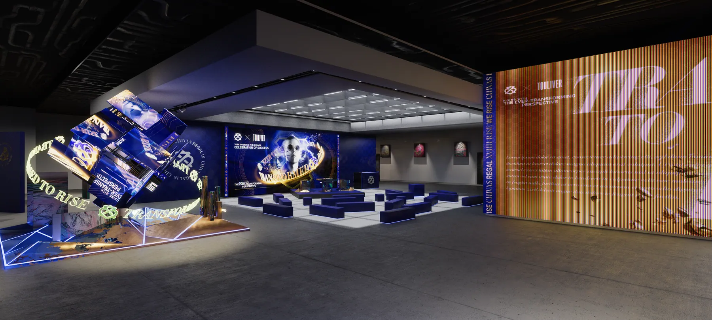

Phối cảnh sự kiện 3D: dùng để làm gì, cần gì

Phối cảnh sự kiện 3D là hình dựng lại toàn bộ không gian của một chương trình trước khi nó được thi công: sân khấu, gian hàng, lối đi, khu trưng bày, màn LED và ánh sáng. Bạn đặt loại hình này khi cần chốt mặt bằng với các bên liên quan, khi cần thuyết trình cho khách hoặc nhà tài trợ, và khi cần hình truyền thông cho chương trình trước ngày khai mạc. Nếu sự kiện chỉ dùng lại thiết bị có sẵn và không ai cần duyệt gì, một mặt bằng 2D kèm ảnh tham chiếu đã đủ.
Bài này nói rõ phối cảnh sự kiện 3D giải quyết những việc gì, các dạng hình thường được đặt, khác biệt so với bản vẽ 2D và ảnh ghép, bạn cần gửi gì để nhận một báo giá có cơ sở, quy trình đi qua những mốc duyệt nào, mất bao lâu và điều gì đẩy chi phí lên. Chúng tôi không nêu con số cụ thể vì giá đổi theo quy mô từng chương trình, nhưng sẽ nói thẳng các yếu tố cấu thành và những chỗ bạn cắt được.
Phối cảnh sự kiện 3D giải quyết việc gì
Giá trị của loại hình này không nằm ở chỗ đẹp, mà nằm ở chỗ nó giúp ba nhóm người khác nhau cùng nhìn vào một thứ và đồng ý với nhau trước khi ai đó bắt đầu cắt vật liệu.
Chốt mặt bằng trước khi bóc khối lượng
Đọc bản vẽ mặt bằng là một kỹ năng, và phần lớn người ra quyết định trong một chương trình không có kỹ năng đó. Khi mọi thứ đã dựng ba chiều, câu hỏi về lối đi quá hẹp, bục cao chắn tầm nhìn hay cụm trưng bày đặt sai hướng xuất hiện ngay ở bàn họp, chứ không xuất hiện vào đêm dựng.
Thuyết trình cho khách và nhà tài trợ
Đây là lý do phổ biến nhất khiến các đơn vị tổ chức đặt phối cảnh. Một bộ hình ba tới năm góc nói thay cho ba mươi phút giải thích, và quan trọng hơn, nó cho thấy logo nhà tài trợ nằm ở đâu, lớn bao nhiêu, người đi qua có thấy không. Những câu hỏi đó rất khó trả lời bằng lời.
Làm hình truyền thông trước ngày khai mạc
Trước khi sự kiện diễn ra thì không có ảnh thật nào để đăng. Phối cảnh 3D lấp đúng khoảng đó: ảnh mời, ảnh giới thiệu khu, ảnh cho bộ bài đăng đếm ngược. Phần này gần với cách làm key visual hơn là cách làm bản vẽ, nên tiêu chuẩn về bố cục và ánh sáng cũng khắt khe hơn.
Các dạng hình phối cảnh sự kiện thường được đặt
Gọi đúng tên dạng hình mình cần là cách rút ngắn vòng báo giá nhanh nhất, vì mỗi dạng tốn công ở một khâu khác nhau.
Mặt bằng isometric
Góc nhìn chéo từ trên xuống, thấy toàn bộ khu vực và quan hệ giữa các hạng mục. Đây là hình để họp và để chốt luồng di chuyển. Nó ít tốn công ánh sáng nhưng đòi mặt bằng phải đúng từng mét, vì sai lệch tỉ lệ ở dạng này lộ ra ngay.
Phối cảnh góc mắt người
Camera đặt ở độ cao khoảng một mét sáu, mô phỏng đúng những gì khách tham quan thấy khi bước vào. Dạng này tốn công nhất ở khâu ánh sáng và vật liệu, và cũng là dạng thuyết phục nhất khi đưa cho người chưa từng tới mặt bằng.
Chi tiết hạng mục
Một quầy bar, một tủ trưng bày, một cụm glorifier, một tường chiếu. Dạng này phục vụ cả thi công lẫn duyệt thiết kế, và thường kèm nhiều phương án để chọn. Cách chúng tôi dựng từng hạng mục nhỏ không khác nhiều so với dịch vụ render 3D sản phẩm, chỉ là bối cảnh xung quanh phức tạp hơn.
Hình động ngắn
Một đoạn camera đi dọc lối vào, hoặc một vòng quanh sân khấu. Khối lượng công việc nhảy bậc so với ảnh tĩnh vì mỗi giây là hai mươi tư tới ba mươi khung, và mọi lỗi nhỏ ở vật liệu đều bị nhân lên theo thời lượng. Các mốc duyệt của một shot động nằm trong bài quy trình dựng TVC 3D.
Phối cảnh 3D so với bản vẽ 2D và ảnh ghép
Ba cách này hay bị đặt cạnh nhau như ba lựa chọn thay thế, trong khi thực tế chúng trả lời ba câu hỏi khác nhau. Bảng dưới đây là cách chúng tôi tự so trước khi nhận việc, kể cả khi kết luận là khách chưa cần dựng 3D.
| Tiêu chí | Bản vẽ 2D | Ảnh ghép từ ảnh thật | Phối cảnh 3D |
|---|---|---|---|
| Dùng để thi công | Đúng việc của nó | Không dùng được | Cần xuất kèm bản vẽ |
| Thuyết trình cho người ngoài ngành | Khó hình dung | Dễ hiểu nếu đúng góc | Dễ hiểu ở mọi góc |
| Mặt bằng chưa có hiện trạng | Làm được | Không làm được | Làm được từ bản vẽ |
| Đổi phương án nhiều lần | Nhanh | Phải ghép lại từ đầu | Sửa trong file, kết xuất lại |
| Nhiều góc của cùng một khu | Phải vẽ thêm từng góc | Phụ thuộc ảnh gốc có sẵn | Thêm camera trong cùng cảnh |
| Dùng tiếp cho truyền thông | Gần như không | Dùng được | Dùng được, nhiều tỉ lệ khung |
| Thời gian cho một phương án đầu | Ngắn nhất | Trung bình | Dài nhất |
| Chi phí khi chỉ cần một hình | Thấp nhất | Trung bình | Cao nhất |
Hai dòng cuối là chỗ cần đọc thẳng: nếu bạn chỉ cần đúng một hình cho một khu nhỏ, dựng 3D là cách đắt nhất. Lợi thế của nó chỉ xuất hiện từ hình thứ ba trở đi, và xuất hiện rất rõ khi phương án còn phải đổi. Cách so giữa freelancer, studio và agency cho phần việc này nằm trong bài studio 3D là gì và chọn thế nào.
Bản vẽ 2D trả lời câu hỏi cái gì nằm ở đâu. Phối cảnh 3D trả lời câu hỏi người đứng trong đó nhìn thấy gì. Đội thi công cần câu thứ nhất, người duyệt ngân sách cần câu thứ hai.
Bạn cần gửi gì để nhận báo giá
Một báo giá có cơ sở cần đủ đầu vào. Gửi thiếu thì bên nhận việc phải báo theo trường hợp xấu nhất, và bạn là người chịu phần dự phòng đó. Danh sách dưới đây là bộ tối thiểu chúng tôi hỏi trước khi báo lại.
- Mặt bằng khu vực kèm số đo, ở định dạng bất kỳ mà bên bạn đang dùng, kể cả ảnh chụp bản vẽ giấy.
- Chiều cao trần hoặc chiều cao giới hạn của khu vực, và vị trí các cột, cửa, thang.
- Ảnh hiện trạng mặt bằng nếu địa điểm đã có, chụp từ nhiều góc, ảnh điện thoại là đủ.
- Danh sách hạng mục cần dựng, ghi rõ hạng mục nào đóng mới và hạng mục nào dùng lại.
- Bộ nhận diện chương trình ở dạng vector, kèm mã màu và font.
- Ảnh tham chiếu phong cách, ba tới năm ảnh là đủ, kèm một câu nói rõ bạn thích điểm nào ở mỗi ảnh.
- Số góc cần giao và tỉ lệ khung cho từng kênh sử dụng.
- Mốc thời gian thật của chương trình, gồm cả ngày duyệt nội bộ chứ không chỉ ngày khai mạc.
Thiếu bản vẽ mặt bằng thì vẫn làm được từ ảnh hiện trạng kèm số đo tay, nhưng sai số tỉ lệ cao hơn và số vòng sửa thường tăng. Nếu bạn muốn xem trước cách chúng tôi trình bày một bộ phối cảnh hoàn chỉnh, các bộ ở dự án phối cảnh sự kiện 3D là chỗ nên bắt đầu, trong đó gian hàng kỷ niệm 10 năm Lộc Phúc là ví dụ của một chương trình nhiều concept song song.
Quy trình và thời gian thực tế
Chúng tôi chia việc theo bốn mốc duyệt. Mỗi mốc đóng lại một nhóm quyết định, để vòng sau không phải mở lại vòng trước.
Mốc một, khối và mặt bằng. Dựng hình khối thô đúng tỉ lệ, chưa có vật liệu, chưa có ánh sáng. Đây là lúc đổi vị trí hạng mục và chiều rộng lối đi gần như không mất phí. Bỏ qua mốc này là nguyên nhân phổ biến nhất của phát sinh về sau.
Mốc hai, góc máy. Chốt từng góc sẽ giao, dưới dạng hình kết xuất nháp. Chốt góc trước khi làm chi tiết là cách tiết kiệm lớn nhất, vì mọi công làm bề mặt ở vùng camera không thấy đều là công bỏ đi.
Mốc ba, vật liệu và ánh sáng. Bề mặt in, kim loại, kính, gỗ, và hệ đèn của khu. Đây là mốc tốn thời gian nhất và cũng là mốc quyết định hình trông thật hay trông giả.
Mốc bốn, kết xuất và hậu kỳ. Ra hình độ phân giải cao, chỉnh màu, xuất các tỉ lệ khung cho từng kênh. Phần sửa ở mốc này nên chỉ còn là sửa nhỏ, nếu còn sửa khối thì nghĩa là một mốc trước đó đã bị bỏ qua.
Về thời gian, ước lượng từ các dự án chúng tôi đã làm là khoảng một tới hai tuần cho ba tới năm góc của một khu vực có mặt bằng đã chốt. Triển lãm nhiều khu như phối cảnh triển lãm Axehibition thì dài hơn, vì mỗi khu gần như là một đề bài riêng. Đây là ước lượng, không phải cam kết, và biến số khó đoán nhất luôn là số vòng duyệt bên phía khách.
Điều gì đẩy giá lên và chỗ nào cắt được
Bốn yếu tố quyết định phần lớn chi phí. Biết chúng thì bạn đọc được một báo giá và biết nên hỏi lại chỗ nào.
Số góc giao cuối. Yếu tố ảnh hưởng mạnh nhất và cũng dễ cắt nhất. Hai góc chọn đúng thường làm được việc của bốn góc chọn tuỳ hứng.
Số hạng mục đóng mới. Hạng mục dùng lại thiết bị có sẵn thì dựng nhanh. Hạng mục thiết kế riêng, nhất là loại có cấu trúc phức tạp hoặc nhiều lớp vật liệu, tốn công gấp nhiều lần.
Hình tĩnh hay hình động. Đây là bước nhảy bậc, không phải bước tăng dần. Nếu ngân sách có hạn, giữ hình tĩnh và tăng số góc thường có lợi hơn là đổi sang hình động.
Số vòng sửa. Hãy hỏi thẳng một vòng sửa được định nghĩa thế nào và vòng thứ bao nhiêu thì tính thêm. Đây là nguồn tranh chấp phổ biến nhất trong loại việc này, và một báo giá tử tế ghi rõ nó thay vì để ngỏ.
Chỗ cắt được nhiều nhất thường không phải là mặc cả đơn giá, mà là rút danh sách góc giao và chốt mặt bằng sớm hơn. Phạm vi công việc chúng tôi nhận cho phần này ghi ở trang dịch vụ dựng hình 3D.
Những điểm bất lợi cần biết trước
Ba điều dưới đây ít được nói ra trong lúc chào việc, nhưng biết trước thì bạn đỡ thất vọng.
Hình luôn đẹp hơn hiện trường một chút. Đèn thật có tản sáng, bề mặt in thật có sai màu, sàn thật có vết. Cách xử lý đúng là chốt mẫu in và thông số đèn thật ở mốc ba, chứ không phải làm hình xấu đi cho giống.
Phối cảnh không thay được bản vẽ thi công. Nếu đơn vị thi công cần số liệu, phải có bản vẽ kỹ thuật đi kèm. Đưa một bộ ảnh đẹp cho xưởng rồi mong họ tự suy ra kích thước là cách chắc chắn dẫn tới sai.
Concept còn đổi thì chưa nên dựng. Nếu ý tưởng chính còn có thể thay trong vài tuần tới, hãy chờ. Dựng theo bản chưa chốt nghĩa là trả tiền hai lần cho cùng một việc, và chúng tôi nói điều này cả khi người hỏi đang muốn đặt hàng.
Nếu bạn muốn giữ một người trong nhà làm được phần dựng khối và sửa phương án nhanh, còn phần hình cuối thuê ngoài, hai hệ ở trang khoá học 3D Blender ghi rõ đầu ra từng tuần, và phần chọn hướng trong cẩm nang học Blender nói thẳng những việc một người tự học làm được và chưa nên nhận.
Câu hỏi thường gặp về phối cảnh sự kiện 3D
Phối cảnh sự kiện 3D khác gì bản vẽ 2D của đơn vị thi công?
Bản vẽ 2D trả lời câu hỏi kích thước và vị trí, phối cảnh 3D trả lời câu hỏi người đứng trong đó nhìn thấy gì. Hai thứ không thay thế nhau. Bản vẽ kỹ thuật vẫn là tài liệu để thi công và để bóc khối lượng, còn phối cảnh là tài liệu để duyệt ý tưởng, để thuyết trình với nhà tài trợ và để làm hình truyền thông trước ngày khai mạc.
Cần gửi gì để nhận báo giá dựng phối cảnh sự kiện?
Tối thiểu là mặt bằng khu vực kèm số đo và chiều cao trần, danh sách hạng mục cần dựng, bộ nhận diện của chương trình ở dạng vector, và một câu nói rõ hình sẽ dùng để duyệt nội bộ hay để làm key visual. Có thêm ảnh hiện trạng mặt bằng và ảnh tham chiếu phong cách thì vòng duyệt đầu tiên rút ngắn đáng kể.
Một bộ phối cảnh sự kiện 3D mất bao lâu?
Ước lượng từ các dự án chúng tôi đã làm là khoảng một tới hai tuần cho ba tới năm góc của một khu vực có mặt bằng đã chốt, tính từ lúc nhận đủ bản vẽ và nhận diện. Triển lãm nhiều khu, sân khấu có màn LED lớn hoặc chương trình còn đang đổi concept thì dài hơn. Biến số khó đoán nhất vẫn là số vòng duyệt bên phía khách.
Phối cảnh 3D có bắt buộc giống y hệt sự kiện thật không?
Phải giống ở những thứ đo được: tỉ lệ, kích thước hạng mục, vị trí và chiều cao. Không thể giống tuyệt đối ở ánh sáng và vật liệu, vì đèn thật tại hiện trường và bề mặt in thật luôn lệch ít nhiều so với hình kết xuất. Chỗ nên cảnh giác là hình đẹp hơn mức thi công có thể làm được trong ngân sách đã duyệt.
Chương trình nhỏ có cần phối cảnh 3D không?
Thường là không cần nhiều. Một chương trình nội bộ dùng lại backdrop và sân khấu có sẵn thì một mặt bằng 2D cộng ảnh tham chiếu là đủ. Phối cảnh 3D đáng tiền khi hạng mục phải đóng mới, khi cần thuyết phục người chưa từng thấy mặt bằng, hoặc khi hình còn phải dùng tiếp cho truyền thông.
Nếu bạn đang có một chương trình cần ra hình, gửi cho chúng tôi mặt bằng kèm danh sách hạng mục và ngày duyệt nội bộ. Chúng tôi báo lại thời gian và chi phí, và nói thẳng nếu một bộ mặt bằng 2D là lựa chọn hợp hơn cho quy mô của bạn. Muốn xem cách chúng tôi làm việc trước khi hỏi giá thì trang studio visual 3D LXAM và các bộ hình ở dự án phối cảnh sự kiện 3D là chỗ nên bắt đầu.
Đọc tiếp


Muốn được sửa bài trực tiếp?
Coaching 1:1 online, đồng hành trọn một năm. Để lại thông tin, tôi xem qua và tư vấn bạn nên bắt đầu từ đâu.
Đăng ký tư vấn